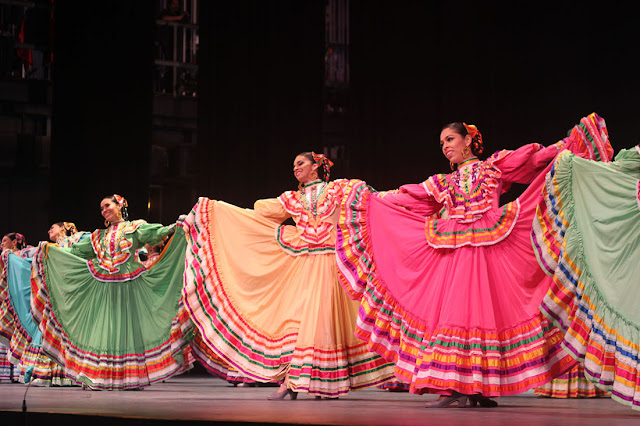

Conoce Colima
Colima es la capital del estado mexicano del mismo nombre. Se ubica cerca de la costa del Pacífico central, en un valle al sur del volcán Colima. El Jardín Libertad es su plaza principal y cuenta con un quiosco belga del siglo XIX y el Portal Medellín, un gran edificio con filas de arcos. La Catedral Basílica Menor de Colima tiene una fachada neoclásica. Junto a la catedral está el Palacio de Gobierno.

Por su gran cultura que cuenta con cinco siglos visibles de folclore, costumbres, gastronomía y tradiciones, fue nombrada Capital Americana de la Cultura en 2014. También es la segunda ciudad más antigua de México (y de la plataforma continental americana), siendo fundada el 20 de enero de 1523 por Gonzalo de Sandoval.
